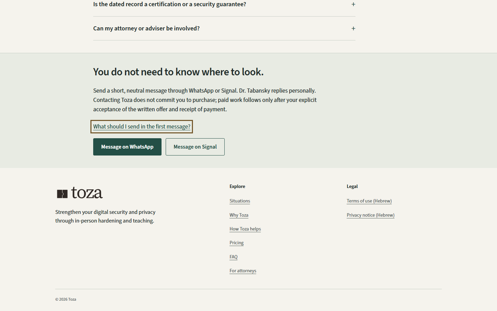
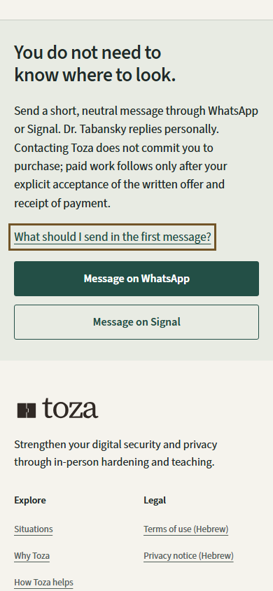
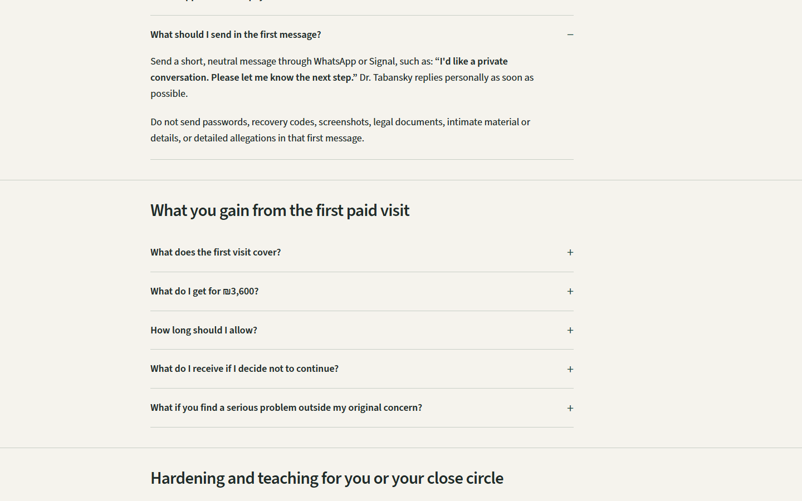
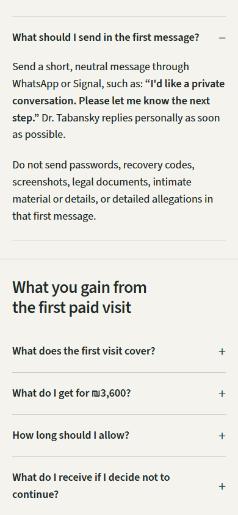
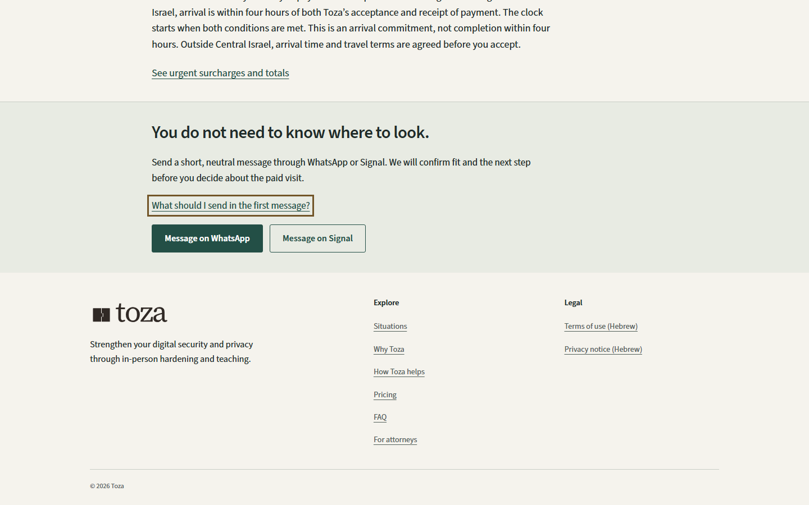
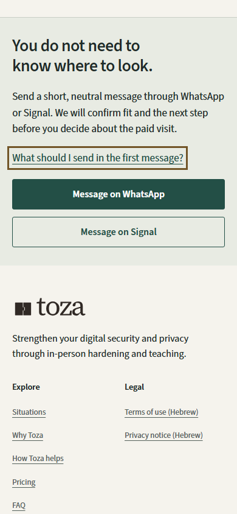

FAQ
Explore working contactOpen working guidanceFull desktopFull mobileShort-phone contactShort-phone guidancePrint contact


Contact ending before link activation




Guidance after link activation




How Toza helps
Explore working contactOpen working guidanceFull desktopFull mobileShort-phone contactShort-phone guidancePrint contact


Contact ending before link activation




Guidance after link activation